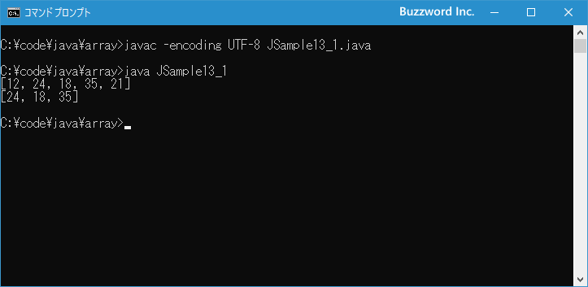

配列の指定範囲の要素から新しい配列を作成する(copyOfRange)
配列をコピーするときに、すべての要素ではなく指定した範囲の要素だけをコピーして新しい配列を作成することができます。ここでは Arrays.copyOfRange メソッドを使って配列の指定した範囲の要素から新しい配列を作成する方法について解説します。
指定範囲の要素から新しい配列を作成する
配列をまるまるコピーして新しい配列を作成するには Arrays.copyOf メソッドを使用しました。(詳しい手順は「Arrays.copyOfメソッドを使ってコピーする」を参照されてください)。
import java.util.Arrays; // java.util.Arraysのインポートが必要です
int[] src = {12, 24, 18};
int[] dst = Arrays.copyOf(src, 3);
Arrays.copyOf メソッドでも 2 番目の引数でコピーする要素の数を変更することで、先頭の要素から指定した数の要素だけをコピーして新しい配列を作成することができます。もし開始インデックスと終了インデックスを指定して配列の一部の範囲の要素をコピーして新しい配列を作成するには Arrays.copyOfRange メソッドを使用します。
copyOfRange はクラスメソッドとして定義されており、引数の型毎に異なるメソッドが定義されています。例えば int[] 型の値を引数に取る copyOfRange メソッドは次のように定義されています
public static int[] copyOfRange(int[] original, int from, int to)
パラメータ:
original - 範囲のコピー先となる配列
from - コピーされる範囲の最初のインデックス(これを含む)
to - コピーされる範囲の最後のインデックス(これを含まない)。 (このインデックスは配列の外側に存在することもある。)
戻り値:
必要な長さにするために切り詰められた、またはゼロでパディングされた、元の配列の指定された範囲を含む新しい配列
例外:
ArrayIndexOutOfBoundsException - from < 0またはfrom > original.lengthの場合
IllegalArgumentException - from > toの場合
NullPointerException - originalがnullの場合
1 番目の引数にコピーする対象の配列を指定します。 2 番目の引数で指定した開始インデックスの要素から、 3 番目の引数で指定して終了インデックスの一つ前の要素までをコピーし、新しい配列として戻り値として返します。
次のサンプルを見てください。
import java.util.Arrays; // java.util.Arraysのインポートが必要です
int[] src = {12, 24, 18, 35, 21};
int[] dst = Arrays.copyOfRange(src, 1, 4);
System.out.println(Arrays.toString(src)); // [12, 24, 18, 35, 21]
System.out.println(Arrays.toString(dst)); // [24, 18, 35]
対象の配列の指定した範囲の要素を取り出して新しい配列を作成することができました。
それでは簡単なサンプルプログラムを作って試してみます。テキストエディタで次のように記述したあと、 JSample13-1.java という名前で保存します。
import java.util.Arrays;
class JSample13_1{
public static void main(String[] args){
int[] src = {12, 24, 18, 35, 21};
int[] dst = Arrays.copyOfRange(src, 1, 4);
System.out.println(Arrays.toString(src));
System.out.println(Arrays.toString(dst));
}
}
コンパイルを行います。
javac -encoding UTF-8 JSample13_1.java
その後で、次のように実行してください。
java JSample13_1

対象の配列の指定した範囲の要素をコピーして新しい配列を作成することができました。
-- --
Arrays.fill メソッドを使って配列のすべての要素を指定した値で埋める方法について解説しました。
( Written by Tatsuo Ikura )

著者 / TATSUO IKURA
初心者～中級者の方を対象としたプログラミング方法や開発環境の構築の解説を行うサイトの運営を行っています。